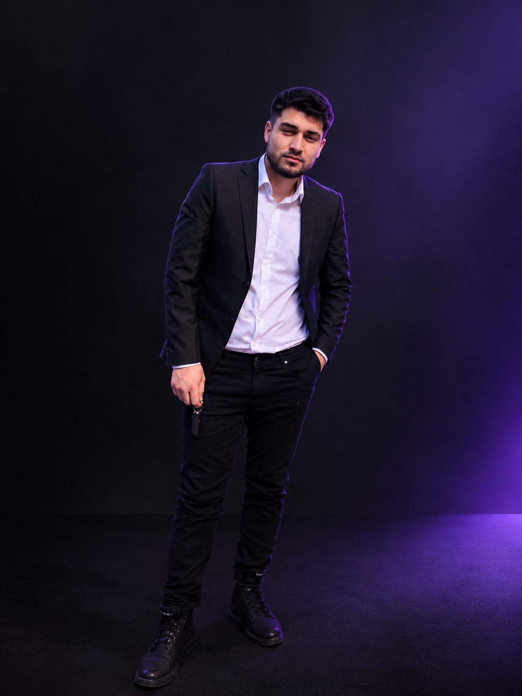
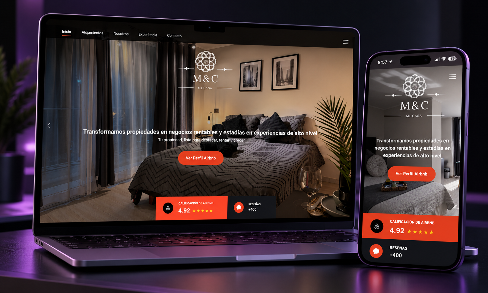
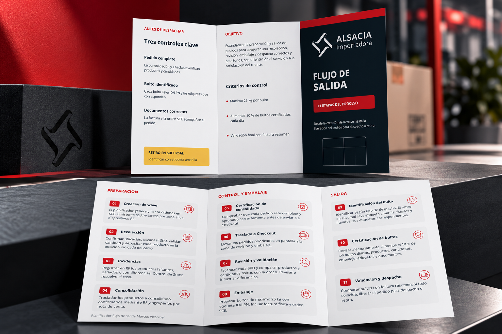

Aprender
Sigo aprendiendo diseño y explorando herramientas para mis proyectos digitales.
CURIOSIDAD COMO PUNTO DE PARTIDADISEÑADOR GRÁFICO DIGITAL
EMPRENDEDOR DIGITAL
Ideas, aprendizajes y acción. Documento mi camino en negocios digitales, e-commerce y crecimiento personal. Un paso a la vez.

Soy Matías, diseñador gráfico digital y emprendedor. Hoy estoy desarrollando proyectos de emprendimiento y negocios digitales, combinando creatividad con ganas de construir algo propio.
Este espacio es mi bitácora: lo que voy haciendo, lo que funciona y lo que todavía estoy aprendiendo. Comparto el proceso mientras lo vivo.
Documento mi proceso mientras sigo aprendiendo diseño y desarrollo proyectos digitales, e-commerce y mi marca personal. Comparto avances, dudas y aprendizajes.
Sigo aprendiendo diseño y explorando herramientas para mis proyectos digitales.
CURIOSIDAD COMO PUNTO DE PARTIDADoy forma a mis ideas y construyo mi marca personal, un paso a la vez.
DE LA IDEA A LA ACCIÓNPongo en práctica lo que aprendo en e-commerce y documento cómo avanza el proceso.
MENOS SUPONER, MÁS EXPLORARReviso mis avances, ajusto lo necesario y comparto lo que voy aprendiendo.
EL CAMINO CONTINÚA ↗Exploro distintas áreas del mundo digital mientras desarrollo proyectos propios, aprendo nuevas herramientas y documento lo que voy descubriendo en el proceso.
Experiencia personal y aprendizaje. No asesoramiento financiero.Estoy aprendiendo a desarrollar una tienda online desde cero: desde la búsqueda de productos hasta la experiencia de compra.
Exploro modelos, herramientas e ideas para entender cómo se construyen proyectos digitales.
Pruebo herramientas digitales e inteligencia artificial que me ayudan a crear, aprender y mejorar mis proyectos.
Construyo mi presencia digital mientras documento mi proceso, aprendizajes y evolución.
Flyers, banners, piezas publicitarias, presentaciones y elementos de identidad visual.
Actualización de textos, imágenes, galerías, sliders, enlaces y gestión de contenido en sitios web existentes.
Diseño de publicaciones, historias y piezas visuales adaptadas a diferentes formatos digitales.
Creación y mejora de imágenes, conceptos visuales e ideas creativas utilizando herramientas de inteligencia artificial como apoyo.

Gestión y actualización de contenido de un sitio inmobiliario en WordPress.
Actualización de textos e imágenes, incorporación y retiro de propiedades y organización de galerías.
Actualización de portada y slider e integración de enlaces hacia Airbnb.
Revisión de la visualización del sitio en dispositivos móviles.

Desarrollo de un tríptico corporativo para organizar y comunicar de forma clara y visual el flujo de salida de pedidos de Alsacia. Participé en la organización del contenido, definición de la estructura y dirección visual, utilizando inteligencia artificial como herramienta de apoyo durante el proceso creativo.
Definición de necesidades, organización del contenido, dirección visual, revisión de propuestas, correcciones y ajustes hasta llegar a la pieza final.
Comparto mi proceso, aprendizajes y experiencias mientras avanzo en emprendimiento, e-commerce, negocios digitales, mentalidad y crecimiento personal.
Comparto mi proceso mientras exploro y desarrollo proyectos en el mundo digital. Si quieres conocer más sobre lo que estoy haciendo, colaborar o conversar sobre algún proyecto, puedes contactarme.
Quiero más información ↗¿Tienes un proyecto o necesitas apoyo con tu presencia digital? Cuéntame brevemente qué necesitas y conversemos sobre cómo puedo ayudarte.
También puedes conocer mi trabajo en Instagram y TikTok.